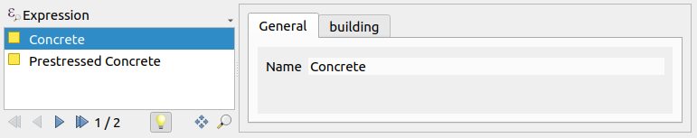

Catalogues and their special cases
What are catalogues and how they are used
Instead of using static enumeration domains in the INTERLIS model, catalogues can be used to look up enumeration values. The catalogues structure can be defined in the same model or externally and the (enumeration) data is stored in an INTERLIS transfer file. See the examples below.
Using enumeration domains
INTERLIS 2.3;
MODEL City_V1 (en)
AT "https://models.opengis.ch"
VERSION "2022-06-22" =
DOMAIN
MaterialType = (
Wood,
Concrete,
Plastic
);
TOPIC Constructions =
OID AS INTERLIS.UUIDOID;
CLASS Building =
Name : TEXT;
Material : MaterialType;
END Building;
END Constructions;
END City_V1.
This is super simple. But to add a new value to the enumeration, one needs to update the entire model. That's why modelers consider catalogues.
Using values in a catalogue
INTERLIS 2.3;
MODEL City_V1 (en)
AT "https://models.opengis.ch"
VERSION "2022-06-22" =
IMPORTS CityCatalogues_V1;
TOPIC Constructions =
OID AS INTERLIS.UUIDOID;
DEPENDS ON CityCatalogues_V1.Catalogues;
CLASS Building =
Name : TEXT;
Material : CityCatalogues_V1.Catalogues.MaterialRef;
END Building;
END Constructions;
END City_V1.
This model here uses the external catalogue CityCatalogues_V1 which is based on the CatalogueObjects_V1.
INTERLIS 2.3;
MODEL CityCatalogues_V1 (en)
AT "https://models.opengis.ch"
VERSION "2022-06-22" =
IMPORTS CatalogueObjects_V1;
TOPIC Catalogues =
OID AS INTERLIS.UUIDOID;
CLASS MaterialItem
EXTENDS CatalogueObjects_V1.Catalogues.Item =
Name : MANDATORY TEXT;
END MaterialItem;
STRUCTURE MaterialRef
EXTENDS CatalogueObjects_V1.Catalogues.CatalogueReference =
Reference (EXTENDED) : REFERENCE TO (EXTERNAL) MaterialItem;
END MaterialRef;
END Catalogues;
END CityCatalogues_V1.
The values are stored in an INTERLIS transfer file (still for catalogues mostly the file extension .xml is used instead of .xtf).
<?xml version="1.0" encoding="UTF-8"?><TRANSFER xmlns="http://www.interlis.ch/INTERLIS2.3">
<HEADERSECTION SENDER="ili2gpkg-4.6.1-63db90def1260a503f0f2d4cb846686cd4851184" VERSION="2.3"><MODELS><MODEL NAME="CityCatalogues_V1" VERSION="2022-06-2" URI="https://signedav.github.io/usabilitydave/models"></MODEL></MODELS></HEADERSECTION>
<DATASECTION>
<CityCatalogues_V1.Catalogues BID="b1e196b7-7d1a-4512-a5c2-5f36f52ba2cc">
<CityCatalogues_V1.Catalogues.MaterialItem TID="db473781-7aec-4100-80eb-9b366b05ffe5"><Name>Wood</Name></CityCatalogues_V1.Catalogues.MaterialItem>
<CityCatalogues_V1.Catalogues.MaterialItem TID="e17b72cb-e6fc-4e5e-ad2e-25b1d132b050"><Name>Plastic</Name></CityCatalogues_V1.Catalogues.MaterialItem>
<CityCatalogues_V1.Catalogues.MaterialItem TID="a29e59ff-ab78-43cd-8a0d-9ab64037c4dd"><Name>Concrete</Name></CityCatalogues_V1.Catalogues.MaterialItem>
</CityCatalogues_V1.Catalogues>
</DATASECTION>
</TRANSFER>
Since the values are now based on a class, additional attributes can be specified. This way, additional information can be provided and multilingualism can be supported.
Implementation
The QGIS form created by Model Baker looks mostly the same as with enumerations.
Note
With Model Baker using smart1Inheritance or smart2Inheritance and per default the parameter --coalesceCatalogueRef ili2db creates the foreign keys directly in the class (Building) that references the item (MaterialItem). This means the table created according to the reference stucture (MaterialRef) does not contain any data.
Multiple selection with BAG OF
If BAG OF attributes are used in the INTERLIS model, the reference structure MaterialRef is implemented as a link table.
CLASS Building =
Name : TEXT;
Material : BAG {1..*} OF CityCatalogues_V1.Catalogues.MaterialRef;
END Building;
Model Baker uses a Relation Editor Widget for it.

Warning
When importing the models with --schemaimport you should never import the catalogue model CityCatalogues_V1 first when using BAG OF. The reason is that in this case the table based on the reference structure MaterialRef cannot be created with a foreign key to the table based on the class Building, because this model is not imported yet. Anyway when importing City_V1, CityCatalogues_V1 is imported properly via dependency by ili2db.
Using Tree Catalogues
YYou can also find models that use CatalogueObjectTrees_V1. This means that the catalog values are stored in a tree structure:
├── Concrete
│ ├── Reinforced Concrete
│ └── Prestressed Concrete
└── Wood
├── Oak
├── Teak
└── Birch
The external catalogue model looks like this:
INTERLIS 2.3;
MODEL CityCatalogues_V1 (en)
AT "https://models.opengis.ch"
VERSION "2022-06-22" =
IMPORTS CatalogueObjectTrees_V1;
TOPIC Catalogues =
OID AS INTERLIS.UUIDOID;
CLASS MaterialItem
EXTENDS CatalogueObjectTrees_V1.Catalogues.Item =
Name : MANDATORY TEXT;
END MaterialItem;
STRUCTURE MaterialRef
EXTENDS CatalogueObjectTrees_V1.Catalogues.CatalogueReference =
Reference (EXTENDED) : REFERENCE TO (EXTERNAL) MaterialItem;
END MaterialRef;
END Catalogues;
END CityCatalogues_V1.
And the data look like this:
<?xml version="1.0" encoding="UTF-8"?><TRANSFER xmlns="http://www.interlis.ch/INTERLIS2.3">
<HEADERSECTION SENDER="ili2gpkg-4.6.1-63db90def1260a503f0f2d4cb846686cd4851184" VERSION="2.3"><MODELS><MODEL NAME="CityCatalogues_V1" VERSION="2022-06-2" URI="https://signedav.github.io/usabilitydave/models"></MODEL></MODELS></HEADERSECTION>
<DATASECTION>
<CityCatalogues_V1.Catalogues BID="b1e196b7-7d1a-4512-a5c2-5f36f52ba2cc">
<CityCatalogues_V1.Catalogues.MaterialItem TID="a29e59ff-ab78-43cd-8a0d-9ab64037c4dd"><IsSuperItem>true</IsSuperItem><IsUseable>false</IsUseable><Name>Concrete</Name></CityCatalogues_V1.Catalogues.MaterialItem>
<CityCatalogues_V1.Catalogues.MaterialItem TID="db473781-7aec-4100-80eb-9b366b05ffe5"><IsSuperItem>false</IsSuperItem><IsUseable>true</IsUseable><Parent REF="a29e59ff-ab78-43cd-8a0d-9ab64037c4dd"></Parent><Name>Reinforced Concrete</Name></CityCatalogues_V1.Catalogues.MaterialItem>
<CityCatalogues_V1.Catalogues.MaterialItem TID="e17b72cb-e6fc-4e5e-ad2e-25b1d132b050"><IsSuperItem>false</IsSuperItem><IsUseable>true</IsUseable><Parent REF="a29e59ff-ab78-43cd-8a0d-9ab64037c4dd"></Parent><Name>Prestressed Concrete</Name></CityCatalogues_V1.Catalogues.MaterialItem>
</CityCatalogues_V1.Catalogues>
</DATASECTION>
</TRANSFER>
Depending on the modeling, first level items may or may not be used.
Note
Enumerations can be structured as trees as well.
Special case on export / validation data with tree structured catalogues
It's not possible to export data with validation from a model that uses codelists with CatalogueObjectTrees_V1 without also exporting the catalogue data.
Reason
There is a constraint in the the class CatalogueReference of CatalogeObjectTrees_V1:
MANDATORY CONSTRAINT
Reference->IsUseable;
Because the content of CatalogueReference is part of the user data. B However, the information whether this reference is usable is in the catalogue data. Therefore, the user data cannot be exported with a successful validation if the catalogue data is not exported as well.
Sollution
You need to export/validate your data toghether with the catalogue data, or check your data with the validator and export it afterwards with disabled validation - but be aware that your transfer file data will be invalid afterwards.
Note
In INTERLIS 2.4 model CatalogueObjectTrees_V2 this will be solved.